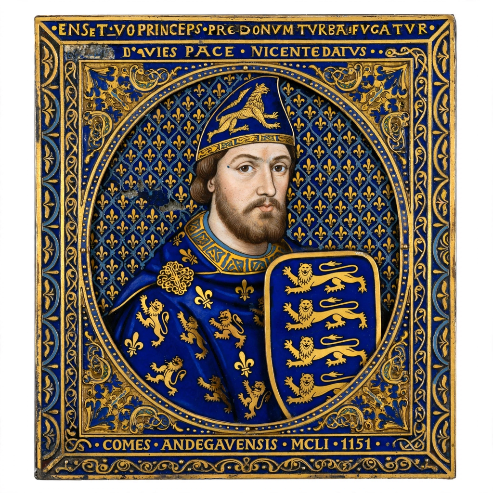

The House of Plantagenet was a royal house that originated in Anjou, France, and ruled the Kingdom of England from 1154 to 1485, providing fourteen kings. The name derives from the nickname of Geoffrey V, Count of Anjou — Geoffrey Plantagenet, supposedly from his habit of wearing a sprig of broom (planta genista) in his cap. Through Geoffrey's marriage to the Empress Matilda, daughter of Henry I, the Plantagenets inherited the English crown in the person of Henry II, and at their height ruled an "Angevin Empire" stretching from Scotland to the Pyrenees.
| Country | England; Anjou; Angevin Empire |
|---|---|
| Founder | Geoffrey V, Count of Anjou |
| First English king | Henry II (r. 1154–1189) |
| Last king | Richard III (d. 1485) |
| Branches | House of Lancaster; House of York |
| End | Battle of Bosworth Field, 1485 |

Henry II (r. 1154–1189) restored royal authority after the Anarchy, reformed English law, and quarrelled fatally with Thomas Becket. His sons Richard I "the Lionheart" (r. 1189–1199), famed for the Third Crusade, and John (r. 1199–1216), who lost Normandy and was forced to accept Magna Carta in 1215, close the Angevin phase. Henry III's long reign (1216–1272) saw the rise of Parliament amid baronial revolt.
Edward I (r. 1272–1307) conquered Wales and campaigned in Scotland; Edward II was deposed in 1327; Edward III (r. 1327–1377) claimed the French crown and began the Hundred Years' War, with victories at Crécy and Poitiers. Richard II was deposed in 1399 by his cousin Henry Bolingbroke, founding the Lancastrian branch.
The Lancastrian kings — Henry IV, Henry V (victor at Agincourt in 1415) and Henry VI — lost the French war and then the crown in the Wars of the Roses, as the Yorkist branch (descended from Edward III's fourth son) contested the throne. Edward IV and Edward V were followed by Richard III, whose defeat and death at Bosworth in 1485 at the hands of Henry Tudor ended Plantagenet rule and began the Tudor dynasty.
The Plantagenet centuries shaped the English common law, Parliament, the exchequer, and the architecture of Gothic cathedrals, and they left a rich legacy in chronicle and drama — above all Shakespeare's history plays. The name itself was revived retrospectively: Richard of York adopted "Plantagenet" as a surname in the fifteenth century to assert his descent.